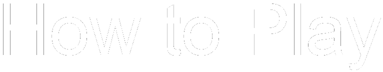
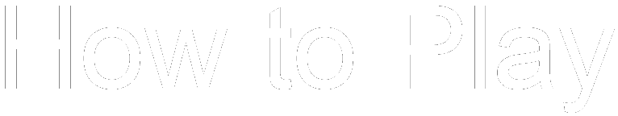
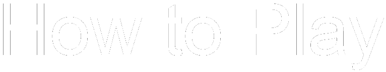
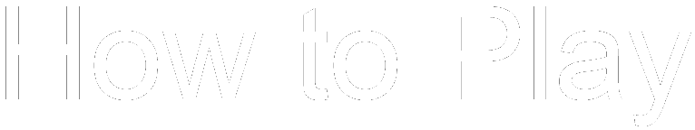

 

To go back press any button
The objective of classic snake is to try to get the highest score as you possibly can by eating the food that is randomly spawned on the screen. Aside from classic mode, we have multiplayer which adds a tron-like competition when you can grab a friend. We also have 'Teleportic' versions for both multiplayer and single player, adding several telepoters that can make or break the game in a pinch. All we ask is that you have fun playing.